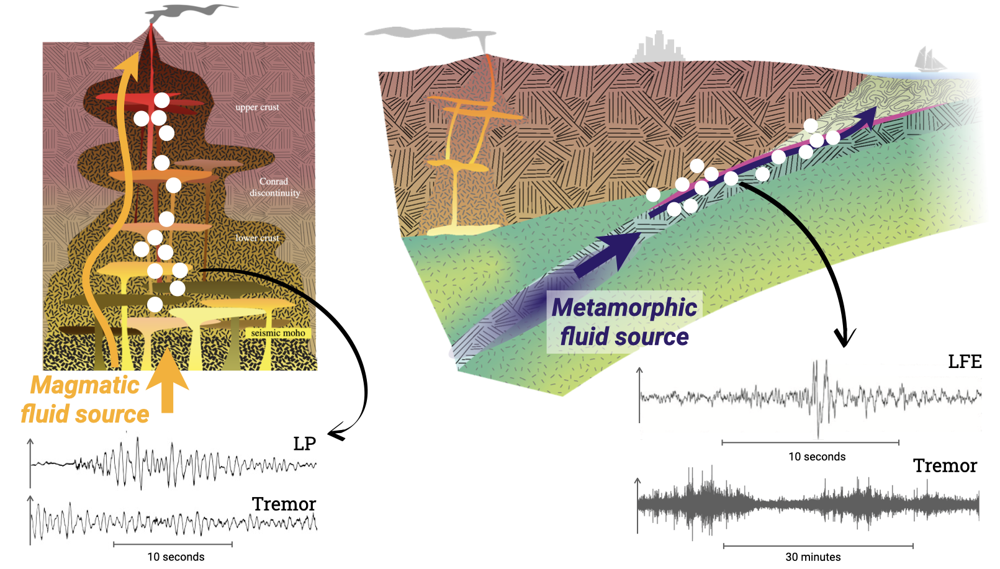

Interacting dynamics of fluid flow & seismicity
Collaborators: Claude Jaupart (IPGP),
Nikolai Shapiro (ISTerre),
Cyril Journeau (UOregon),
Lise Retailleau (IPGP).
Associated publications:
Farge et al. (2023),
Journeau et al. (2022),
Farge et al. (2021).

In both tectonic and magmatic systems, the circulation of fluids is a key force driving and shaping seismicity. Using simplified physical models and seismicity observations, we explore how intermittent fluid flow processes shape seismicity, and how in turn seismicity can be used to monitor the hydraulic state of a tectonic or magmatic system.
Although we first developed this approach to study the hydraulic system of subduction zones (Farge et al., 2021, Farge et al., 2023), the generality of the interactions we described allowed us to understand patterns of volcanic tremor in terms of intermittent fluid flow in the Klychevskoy volcanic group in Kamtchatka (Journeau et al., 2022).